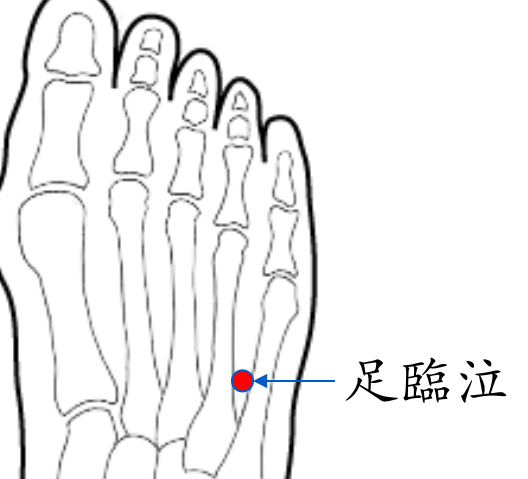

【穴位名稱】: 足臨泣 (GB41)

【治療症狀】: 肋間神經痛 腳背痠痛 坐骨神經痛 偏頭痛 眼睛乾澀 眼花_散光 近視
【取穴位置】: 足背外側第四、五蹠骨底前方，小趾伸肌腱外側凹陷處。當第四、五趾趾縫端 (俠溪)上一寸五分處。《靈樞·本輸》：「〔俠溪〕上行一寸半陷者中」；《針灸甲乙經》：「在足小指、次指本節後間陷者中」。
【針刺方法】: 直刺0.5～1吋。艾炷灸3-5壯，艾條溫灸10-15分鐘。
回前頁